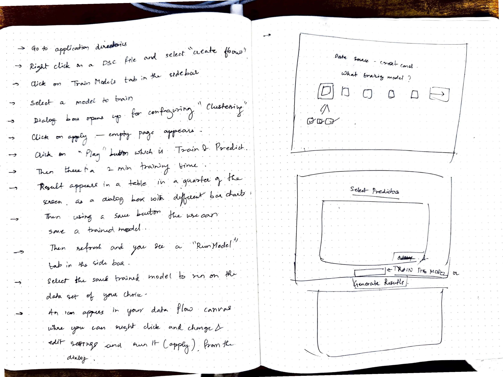
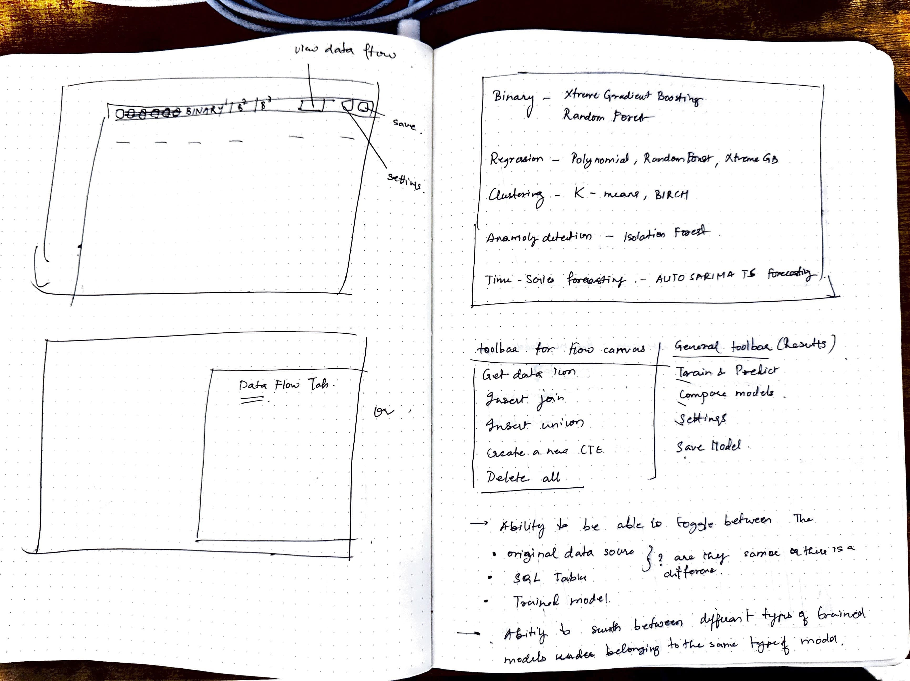
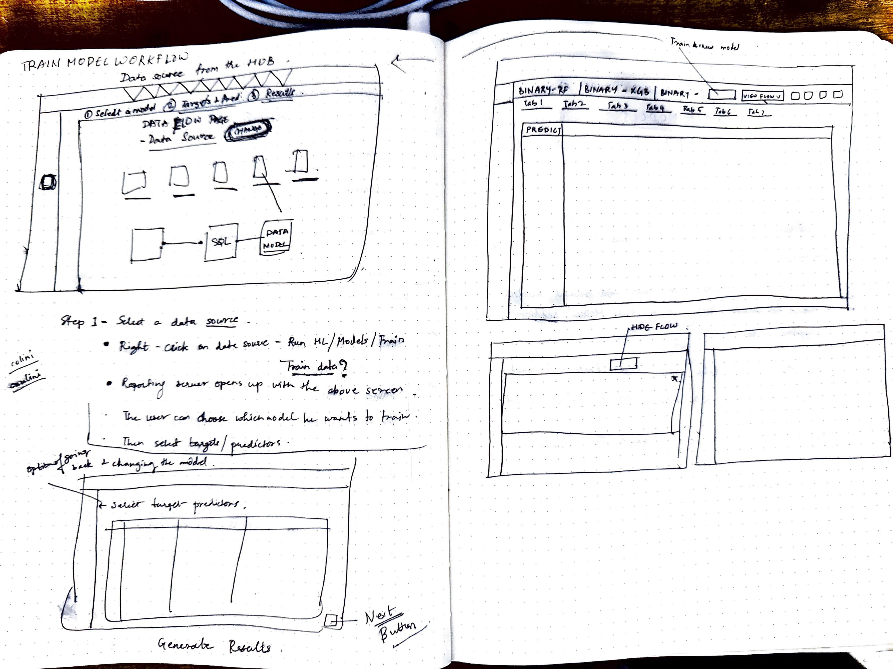

Nobody Could Use Our ML Engine.

The Problem: The UX was a complete liability. A powerful, multi-million dollar ML engine was buried in a data flow canvas — click the plus menu, open a data flow, drag a dataset, drag a model pill, hit a hidden play button, right-click for cascading context menus. 12 to 15 clicks minimum. Nobody used it.
Impact: Turned a zero-adoption ML engine into a guided workflow that four SMEs blazed through without help.
Key Principles & Decisions
One Unified Path (Not Two Separate Modes)
The principal data scientist asked if I was "trying to make this dumb." I wasn't. One path that serves a dual purpose — not dumbed down, not over-engineered. Every step had context, definitions, and tooltips. The sophistication was there; it just waited for you to ask for it.
Popup Wizard (Not Full-Screen)
I tried full-screen views, side-step layouts, two-column layouts. The popup won because WebFOCUS loved modals — all engineers lived in popups. It gave breathing room for helper text and definitions.
Interactive Confusion Matrix
I aligned the threshold slider directly under the chart point — exactly 90 degrees parallel. As you drag it, the dot on the line chart moves with it. No way to miss the relationship.
A Side Project Earned Me the Whole Thing
I started with a tiny request: an explainability popup. Instead of designing it blindly, I mapped the entire upstream ML workflow.
Our Principal Data Scientist showed me a screenshot from another tool and said, "I want this in WebFOCUS." It was a simple request for an explainability popup.
I could have just designed the UI component and handed it back. Instead, I did a lot of digging. I asked questions, built context, and mapped out exactly why the popup was needed and how it fit into the broader system architecture.

He was shocked that I took the effort to understand the entire upstream workflow before touching a single design. That curiosity earned me the trust to completely redesign the multi-million dollar ML platform.
One Path. Not Two Experiences.
Data scientists wanted depth. I wanted simplicity. We landed on one workflow that served both—not dumbed down, not over-engineered.
The principal data scientist asked me early on, "Are you trying to make this dumb?" No. I wasn't removing sophistication. I was making the sophistication legible.
We didn't need two separate experiences. We needed one path that served both business analysts and experts. Every step provided contextual education—definitions, explanations, and tooltips. The sophistication was there; it just waited for you to ask for it.
To bridge the massive knowledge gap, I began doing weekly deep dives with the data scientist. I then used an MIT certification course in AI/ML as an accelerator to build foundational knowledge. Those two things combined allowed me to have smarter, faster, and highly technical conversations with engineering.
Sketchbook Sessions & Wireframes




Architecture & Layout


Every session with the data scientist was enlightening. He loved machine learning. I loved user experience. That mutual passion is why the partnership worked.
Why Don't We Have a Landing Page Here?
There was no entry point to the system. I designed a Predict Data landing page from scratch, capitalizing on existing user behaviors.
The moment I saw the legacy workflow, my first instinct was structural: *why don't we have a landing page here?* Why couldn't users select data themselves? I designed the Predict Data hub from scratch.
I initially tried combining "Train" and "Run" on the same display, but engineering pushed back—it was too complex to maintain in the codebase. So we split them into two tabs. That negotiation balanced UX ambition with technical reality.
The model display was another breakthrough. Dense tables made comparison impossible for non-experts. I introduced model cards instead, where each model gets its own card with the key details needed for an informed decision.
In WebFOCUS, right-clicking is religion. Everything is right-clickable. So putting "Predict Data" in the right-click menu capitalized on the most common user behavior in the product. It was such a success that we later extended the pattern to "Generate Insights" and "Ask a Question."


The 4-step wizard practically designed itself: Problem Type, Target Variable, Predictors, and Hyperparameters. The foundation was staring me in the face.
The Most Complex Screen I've Ever Designed
The confusion matrix featured two charts, a threshold slider, and a 4x3 table. I sketched live with the data scientist until the relationship became undeniable.
The confusion matrix screen was incredibly dense: two charts, a threshold slider, and a four-by-three table. When I first saw it, it looked like a wall of noise. I sat with the data scientist for dozens of sessions—paper, pen, and live sketching—until I grasped every interaction.

The Guided 4-Step Workflow


The Confusion Matrix The breakthrough came when I aligned the threshold slider directly under the chart point that moved—exactly 90 degrees parallel. As you drag the slider, the dot on the line chart moves with it. The relationship became undeniable. After understanding every technical interaction, I was finally able to explain it visually.

Defending the Experience: Data Over Opinions
When legacy constraints threatened the new workflow, I held my ground against engineering directors using research and documentation.
I was managing two massive platform teams simultaneously, and after layoffs, I absorbed four systems. I built a mental model of WebFOCUS as an end-to-end ecosystem: get data, prepare data, train ML, visualize, and distribute. Nobody explained that to me. I built that understanding by touching every corner of the platform.
When the data scientist tried to bring Data Flow canvases back into the UI, I pushed back. In a room with two engineering directors and the principal data scientist, I used user research and session recordings to prove why reverting to the old canvas would break the workflow. We committed to the new direction, and the results spoke for themselves.
They Just Blazed Through It
4/4 SMEs completed the workflow without help. My design director—who knew nothing about ML—learned the system purely by using this workflow.
During validation, I tested the flow with four Subject Matter Experts. I gave them one instruction: "It starts from the dataset." They right-clicked, hit 'Predict Data', and blazed through the 4-step wizard with zero assistance. Because it was that obvious.
The core four-step spine went completely untouched by feedback. Even my design director, who had no background in machine learning, was able to train a model. I essentially taught him machine learning through this UI.
ML Functions taught me the power of product partnership. My PM and I co-owned the direction, and I realized I was shaping the entire product experience.
What a mind-bending project.
"What They Said"
"The clarity of her designs, in spite of the underlying data science and machine learning complexity, is impressive and has greatly contributed to the success of our products. Her design solutions are rooted in a deep understanding of the purpose of the product."
— Marcus Horbach, Principal Data Scientist
"During a User Acceptance Test session, Anuja observed me navigating the screen. I was highly impressed with Anuja's approach. Her design was clean, intuitive, and clearly addressed the needs of users across different skill levels."
— Anita George, Principal Account Tech Strategist